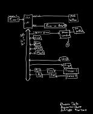

<!DOCTYPE HTML PUBLIC "-//W3C//DTD HTML 4.01 Transitional//EN">
<html><head><meta content="text/html;charset=ISO-8859-1" http-equiv="Content-Type">
  <title>Data Acquisition Device Prototype, Phoenix Project team</title></head>
<body style="background-color: rgb(255, 255, 255);">

<div class="Section1">
<blockquote style="margin-top: 5pt; margin-bottom: 5pt;">
  <h2 style="text-align: center;"><a name="mozTocId861890"></a></h2>

  <h2>
  <center><st1:city><st1:place><span style="color: rgb(0, 153, 0);"><font color="#009900">Phoenix</font></span></st1:place></st1:city><span style="color: rgb(0, 153, 0);"><font color="#009900">
Ambulatory Blood Pressure Monitor Project<br>

  <u>Sub-project:&nbsp;</u></font></span><span style="color: rgb(0, 153, 0); text-decoration: underline;" editable="true" id="SubprojectName">Data Acquisition
Prototype, Phoenix Project team</span></center>

  </h2>

  <h3>Project
Description</h3>

  <p>The purpose of the Data Acquisisiton Prototype subproject is
to
gain experience managing and implementing an open-source medical device
project while building a (possibly not-quite-functional) prototype
blood pressure monitor that extends the work that has come out of the
sensor groups to date.</p>
  <h3>Project Deliverables</h3><h4>Project Management notes.</h4><h5>Group members</h5><ul><li>Larry Beaty (Project Manager)</li><li>Steven James</li><li>Willam Cheng</li><li>Garrett Heidorn</li><li>Chase Turner</li><li>others as available . . .</li></ul>Project Communications<ul><li>Email list: send an e-mail to&nbsp;<a href="#">majordomo@majordomo.tc-ieee.org</a> with 1st line text of&nbsp;</li><ul><li><span style="font-family: Courier New,Courier,monospace;">subscribe tc-ieee-php</span>&nbsp;&nbsp;&nbsp; &nbsp;</li></ul></ul><h5>"Customer"</h5><ul><li>Chris Adams</li></ul><h5>Other stakeholders</h5><ul><li>...</li></ul><h5>Vendors</h5><ul><li>...</li></ul><h5>Consultants</h5><ul><li>Dr. Jim Holte</li></ul><h5>Resources</h5><ul><li>IEEE student lab at UMN</li><ul><li>Need inventory from the lab</li><li>Need access rules for the lab</li></ul><li>Piezoelectric film sensors left over from&nbsp;Akhila Tadinada's project</li><li>A small grant from IEEE for parts and software</li><li>Labview, National Instruments Data Acquisition device and software, Matlab</li><li></li></ul><h5>Project tracking</h5><ul><li>...</li></ul><h3>Project Report</h3><h4>Current activities</h4><ul><li>Improve the piezeoelectric film sensors</li><li>Pursue a better understanding of the Chen patent, prove its viability</li><li>Design and build a microprocessor-based Data Acquisition Board</li><li>Push the price of the <a href="../../018_Sphymochron_Spreadsheet/SphygmochronOrgWebsite/200DollarHomeABPM.html">$200 Home ABPM kit</a> to less than $100</li><li>Investigate opto-electronic sensors</li></ul><br>TBD<br><br>A First Block Diagram &nbsp;<a href="PhoenixDataAcquisitionPrototypeBlocikDiagram1001.jpg"></a><br><h3>Volunteers Are Needed</h3>

  <p>Would you like to work on any part of this project? &nbsp;Envision a prototype, propose a way to implement it, and
send
your suggestion
to <a href="mailto:labeaty@ieee.org?Subject=Data_Acquisition_Device_Prototype">Larry</a>. &nbsp;Or start out by just asking questions.<br>

  </p>

  <h3><a name="mozTocId667544"></a><font face="Times New Roman">About
This Page</font></h3>

  <p>This page is maintained by <a href="mailto:labeaty@ieee.org?Subject=Data_Acquisition_Device_Prototype">Larry
A. Beaty</a>. &nbsp;It was last updated on 23 August 2009.</p>

  <p>The author(s) provide this information as a public service,
and agree to place any novel and useful inventions disclosed herein
into the public domain. They are not aware that this material
infringes on the patent, copyright, trademark or trade secret
rights of others. However, there is a possibility that such
infringement
may exist without their knowledge. The user assumes all responsibility
for determining if this information infringes on the intellectual
property rights of others before applying it to products or services.</p>

  <p>(C) 2008 Larry A. Beaty. Copying and distribution of this
page
is permitted in any medium, provided this notice is preserved.</p>

  <p></p>

  <center><a href="/hyde/">Back to the Phoenix
Home Page</a></center>

  <p></p>

  <p>&nbsp;</p>

</blockquote>

</div>

</body></html>